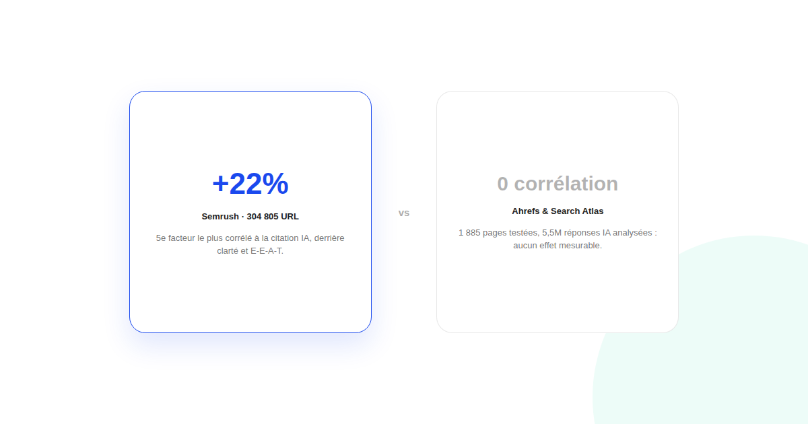
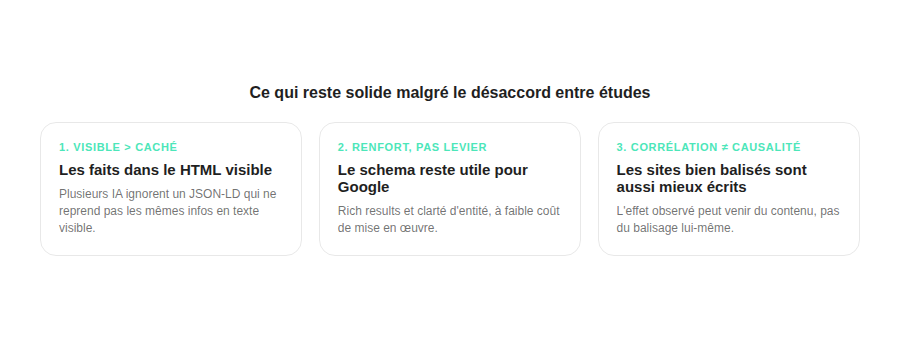

Schema markup et citations IA : ce que les études disent vraiment
« Ajoutez du schema FAQPage et vos citations dans ChatGPT grimpent » — c'est l'argument que répètent de nombreuses agences GEO. Les études indépendantes publiées en 2026, elles, ne racontent pas toutes la même histoire.

Le schema markup (données structurées en JSON-LD) est devenu un argument de vente courant du GEO : en théorie, il aide les IA génératives à comprendre qui a écrit un contenu et à le citer avec plus de confiance. Le problème : les études publiées sur le sujet en 2026 ne tombent pas d'accord, et ignorer ce désaccord revient à vendre une certitude qui n'existe pas.
Ce que montrent les études favorables au schema
Une analyse de Semrush portant sur 304 805 URL situe les données structurées comme le cinquième facteur le plus corrélé à la citation par les IA, avec un gain associé de 22 % — derrière des signaux de clarté et d'E-E-A-T plus déterminants. Plusieurs guides d'agences GEO présentent par ailleurs le schema Article, FAQPage, HowTo et Organization comme les types les plus porteurs, sans toujours préciser la méthodologie derrière ces recommandations.
Ce que montrent les études qui ne trouvent aucun effet
À l'inverse, un test Ahrefs portant sur 1 885 pages ne relève aucune amélioration mesurable sur ChatGPT, Google AI Mode ou les AI Overviews. Une analyse de Search Atlas sur 5,5 millions de réponses IA va plus loin : elle ne trouve aucune corrélation mesurable entre la présence de schema et le taux de citation sur OpenAI, Gemini ou Perplexity. L'explication la plus plausible : les sites qui implémentent soigneusement leur schema ont aussi, en général, un meilleur contenu et une meilleure base technique — la corrélation positive observée ailleurs pourrait simplement refléter cela, pas un effet causal du balisage lui-même.

Un point qui revient dans plusieurs tests, lui plus cohérent
Un test cité dans plusieurs analyses GEO indépendantes rapporte que ChatGPT, Claude, Perplexity, Gemini et Google AI Mode ont tous ignoré un contenu JSON-LD qui ne reprenait pas les mêmes informations en HTML visible. Ce point-là est moins contesté que l'effet du schema en général : la pratique qui ressort de façon cohérente est de faire apparaître les faits importants dans le texte visible de la page, le schema restant un renfort plutôt qu'un substitut.
Ce qu'on peut raisonnablement en tirer
Le schema markup reste peu coûteux à mettre en œuvre et utile pour le référencement classique (rich results, clarté d'entité) — rien ne justifie de l'abandonner. Ce qui n'est pas démontré par une étude indépendante solide, c'est qu'il produise à lui seul davantage de citations IA. La priorité reste la même qu'avant l'essor du GEO : un contenu factuel, structuré visiblement (intertitres, listes, FAQ lisible), avec le schema comme renfort technique plutôt que comme levier principal.
FAQ
Faut-il arrêter d'implémenter du schema markup sur son site ?
Non : le schema markup reste utile pour les rich results Google classiques et la clarté entité pour un coût de mise en œuvre faible. Ce qui n'est pas démontré, c'est qu'il produise à lui seul davantage de citations dans les réponses IA.
Pourquoi les études sur le schema markup et les citations IA se contredisent-elles ?
Les méthodologies diffèrent (nombre de pages, moteurs testés, définition de ce qui compte comme citation) et la corrélation observée dans certaines études peut venir du fait que les sites bien balisés ont aussi, en général, un meilleur contenu et un meilleur SEO technique — pas forcément du schema lui-même.
Les IA génératives lisent-elles le JSON-LD caché dans le code source ?
Un test cité dans plusieurs analyses indique que ChatGPT, Claude, Perplexity, Gemini et Google AI Mode ont tous ignoré du JSON-LD qui ne reprenait pas les mêmes informations en HTML visible. La pratique la plus sûre reste de faire apparaître les faits clés directement dans le texte visible de la page.
Envie d'un audit GEO basé sur ce qui est vraiment démontré ?
Pour aller plus loin, voir la page GEO, le guide complet GEO, et l'audit de visibilité IA.
Pour continuer sur ce sujet.